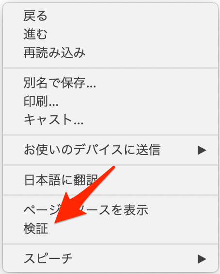

はじめに
それでは早速ですが、まずはHTMLとJavaScriptを1つずつ用意して簡単なvue.jsアプリを作成してみましょう。 本稿ではプロジェクト名(アプリ名)を「Access Log Analyzer」とします。 そして、以下を前提とします。
export PROJECT_NAME="accessLogAnalyzer"
export PROJECT_DIR="${HOME}/${PROJECT_NAME}"
コマンドやファイルのパスを示すに当たって、${PROJECT_DIR}という環境変数で示すようにしますが、実行結果、ログをご紹介するときは、上記の実際の値で出力されているものを掲載しています。
1.1 ディレクトリ作成
mkdir ${PROJECT_DIR}
cd ${PROJECT_DIR}
mkdir src
mkdir public
cd public
srcディレクトリに以下の内容のindex.htmlとindex.jsを作成します。
ファイル名: index.html
<html>
<head>
<title>vue.js hello Vue! </title>
<script src="https://cdn.jsdelivr.net/npm/vue/dist/vue.js"></script>
</head>
<body>
<div id="app">
{{ message }}
</div>
<script src="/index.js"></script>
</body>
</html>
ファイル名: index.js
var app = new Vue({
el: '#app',
data: {
message: 'Hello Vue!'
}
})
これらはpublicディレクトリに直接作成しても構いませんが、2.npmでパッケージ管理して、webpackでビルドするを念頭に、その役割を意識するために、あえてsrcディレクトリを設けています。
publicディレクトリを設けているので、もちろんソースコードから実際に稼働するpublicディレクトリへの配置が必要です。必要な作業は単なるコピーのはずですが、ここではあえてbuild.shというファイルを作成します。
cd ${PROJECT_DIR}
ファイル名: build.sh
#!/bin/bash
export PROJECT_NAME="accessLogAnalyzer"
export PROJECT_DIR="${HOME}/${PROJECT_NAME}"
cd ${PROJECT_DIR}
cp -p ./src/index.* ./public
chmod 755 ./public/*
chmod 700 build.sh
動作を確認するためにはHTTPServerが必要です。 以下のコマンドで簡易のHTTPSeverをインストールして稼働させます。
npm install -g http-server
cd ${PROJECT_DIR}/public
http-server
ブラウザで http://localhost:8080/ へアクセスしてみましょう。 どうでしょうか。以下のように見えましたでしょうか？

ついでに、ブラウザにインストールした拡張(Vue.js devtools)も確認しておきます。



devtoolsそのものの使い方については、また機会を改めたいと思いますが、動作していることは確認できたかと思います。
まとめ
文字通りHello Worldレベルはありますが、Vue.jsを使ってみました。
大事なことは、Vue.js自身がHTMLから読み込まれていること、そしてHTMLの中にキーワードを埋め込んで、JavaScriptのソースコードから操作できていること、この3点です。
さて、続いては2. npmでパッケージ管理して、webpackでビルドするです。 さきほどbuild.shで単なるコピーをするスクリプトを作成しましたが、これがwebpackというコマンドに変わることになります。
comments powered by Disqus